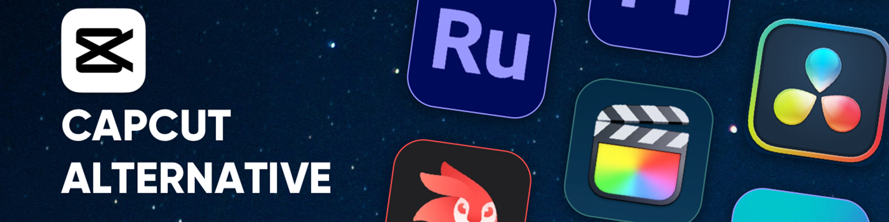

2025 年適合所有創作者的 10 款最佳 CapCut 替代品
在短視頻盛行的今天，視頻編輯已不再只是一項專業技能，而是融入到日常生活中。無論你是記錄日常點滴、製作教程，還是推廣業務，一款可靠的編輯工具都至關重要。
CapCut 以免費且易於初學者使用而聞名，它爲數百萬人打開了視頻創作的大門。它擁有超過 3 億月活躍用戶，全球下載量超過 10 億次，一度佔據了 80% 以上的移動視頻編輯市場。
但隨着創作者需求的不斷增長，沒有任何一款工具能夠滿足所有場景的需求。因此，我們整理了10款值得一試的CapCut替代方案。
爲什麼你應該尋找 Capcut 的替代品
2025年初，由於政府對字節跳動應用的限制，CapCut曾一度從美國應用商店下架。儘管後來它又回歸了美國市場，但其能否在美國市場長期穩定運營仍存在不確定性，這讓許多創作者對其內容創作的未來感到擔憂。
與此同時，CapCut 2025 年更新的服務條款也引起了關注，尤其是關於上傳內容的使用和授權方式。這引發了部分用戶對其作品版權和所有權的擔憂。
簡而言之，CapCut 仍然是一個強大的工具，但美國政策的不確定性及其服務條款的限制促使一些創作者探索替代方案。
在歐洲，CapCut 不受此類法規影響，可以穩定使用，但許多人發現其價格偏高。如果你擔心價格問題，可以通過找一些拼車服務獲得更便宜的訂閱服務。如果你既注重價格實惠又注重可靠性，同時仍在尋找 CapCut 的替代方案，請繼續閱讀——我們爲你總結了 10 個最佳選擇。
什麼是好的 CapCut 替代品？
如今市面上有如此多的視頻編輯工具，選擇合適的 CapCut 替代品可能會讓人不知所措。爲了有效地縮小選擇範圍，你首先需要設定一些明確的標準。我建議根據以下幾點來評估每個選項：
- 界面簡單易用 ：CapCut 如此受歡迎的原因之一是其學習難度低。任何優秀的替代方案都應該讓初學者也能輕鬆快速地製作視頻。
- 全面的功能 ：一個可靠的替代品至少應該匹配 CapCut 的核心功能——剪輯、字幕、效果、音樂等等——這樣你就不會覺得自己失去了基本功能。
- 修復 CapCut 的弱點 ：尋找超越 CapCut 限制的工具，例如多軌道編輯、高級色彩分級或專業音頻處理，這些工具對於更嚴肅的創作者特別有幫助。
- 價格合理 ：由於 CapCut 是免費的，其他替代品的價格也應該不會太高。提供免費套餐或價格實惠的訂閱服務，讓你物有所值。
- 安全性和可靠性 ：除了功能之外，穩定性也至關重要。一個強大的替代方案應該安全可靠，並且不會因爲政治或監管問題而消失。
考慮到這些要點，我挑選了十款 CapCut 的替代方案。其中一些符合所有條件，是出色的全能型選擇；而另一些可能缺少一兩個功能，但在特定領域卻表現出色。你可以根據自己的需求，找到最適合自己的一款。
2025 年 10 款最佳 CapCut 替代品
- Filmora：適合大多數用戶的最佳一體化編輯器
- iMovie：Apple 用戶的最佳基本工具
- Videoleap：最適合 Apple 用戶使用的高級工具
- Canva 視頻編輯器：最適合團隊和社交內容
- InShot：最佳移動優先編輯應用程序
- VEED.IO：最適合基於瀏覽器的編輯
- Adobe Premiere Rush：過渡到專業版的最佳工具
- Final Cut Pro：Mac 用戶最佳的專業級編輯器
- 達芬奇：最適合調色和後期製作
- Adobe Premiere Pro：電影製作人的行業標準
Filmora：適合大多數用戶的最佳一體化編輯器
Filmora 由 Wondershare 開發，是一款跨平臺視頻編輯器，可在 Windows、Mac 和移動設備上運行。根據我的經驗，它與 CapCut 一樣易於使用，但功能更齊全。跨平臺支持讓我在電腦和手機之間切換編輯非常方便。
一大亮點是其龐大的 Filmstock 庫。它能讓你訪問數百萬個視頻片段、音樂曲目和圖形元素，質量遠超大多數免費資源。
除此之外，Filmora 還提供靈活的導出設置，允許你自定義分辨率、幀速率和比特率，以及針對流行社交平臺的一鍵優化。
定價
Filmora 的訂閱計劃可能感覺有點複雜，但你可以從兩個主要角度來考慮：個人訂閱頁面 和 捆綁銷售頁面。個人計劃僅包含 Filmora 軟件本身，而捆綁銷售選項則增加了額外的功能，例如訪問 Filmstock 資產庫和 AI Portrait 插件。
在每個選項中，Filmora 都提供多個訂閱等級，每個等級都有不同的功能和優勢。如果你想了解完整的細分信息，官方網站上有一個詳細的比較圖表，可以清楚地顯示各個等級之間的差異。

適用對象
非常適合任何級別的創作者 - 從初學者到高級用戶 - 他們想要簡單的編輯工具，而又不放棄專業品質的結果。
主要特點
- 界面友好，易於學習，擁有全套編輯功能
- 豐富的 AI 工具，包括智能場景檢測、自動節拍同步和文本到視頻生成
- 內置 Filmstock 素材庫和靈活的導出設置，並針對社交平臺進行一鍵優化

iMovie：Apple 用戶的最佳基本工具
iMovie 是蘋果內置的免費剪輯工具，主要功能包括剪輯、字幕、音頻調整、4K 導出等，足以滿足日常的輕量級剪輯需求。
話雖如此，在我看來，它並非 CapCut 的真正替代品。它的功能太基礎，更適合家庭視頻或學校作業，在效果和效率方面也達不到如今短視頻創作者的期望。
儘管如此，許多人只使用 CapCut 進行簡單的家庭或課堂項目。對於這些用戶來說，iMovie 實際上是一個不錯的選擇。
主要特點
- 完全免費並預裝在 Apple 設備上
適用對象
Apple 用戶、視頻創作新手以及任何進行家庭或日常編輯的人
亮點
- 界面直觀，易於上手
- 免費 4K 導出，深度融入 Apple 生態系統
- 有限的效果和模板
Videoleap：最適合 Apple 用戶使用的高級工具
Videoleap 是一款由以色列公司 Lightricks 開發的移動視頻編輯應用。它最初在 iOS 平臺上大受歡迎，現在也支持 iOS 和 Android 系統。很多人會想：既然 iMovie 已經內置在 iPhone 中，Videoleap 是如何在 iOS 平臺上取得成功的？
從我在 iPhone 上的使用體驗來看，答案顯而易見——Videoleap 在創意功能方面非常出色。綠屏摳像和關鍵幀動畫等工具爲短視頻增添了精緻專業的質感——這是 iMovie 無法企及的。市場後來證明了，這正是 Videoleap 在 iOS 上如此迅速崛起的原因。
現在，Videoleap 也已支持 Android 系統，其用戶羣體更加廣泛。對於專注於 TikTok、Reels 或 YouTube Shorts 並希望獲得更多創意效果的創作者來說，Videoleap 無疑是 CapCut 的絕佳替代品。
定價
- 免費版本（有水印和功能限制）
- 高級訂閱：約 7.99 美元/月或 35.99 美元/年（價格因地區而異）
適用對象
短視頻創作者、社交媒體影響者以及熱愛創意效果和編輯技巧的用戶
主要特點
- 針對移動端編輯進行優化，快捷方便
- 4K 導出，帶有 TikTok、Reels 和 YouTube Shorts 預設
- 免費版本功能非常有限；高級功能需要訂閱

Canva 視頻編輯器：最適合團隊和社交內容
Canva 視頻編輯器最讓我印象深刻的是它繼承了 Canva 的標誌性風格——直觀易用。我幾乎不需要任何編輯經驗；只需模板和拖放操作，幾分鐘就能製作出一個 TikTok 或 YouTube 視頻。
話雖如此，它確實有其局限性。多軌道編輯和調色功能感覺有點弱，所以不太適合更複雜的項目。但能夠直接利用 Canva 龐大的素材庫，讓整個流程變得快速高效，這對於團隊項目和營銷內容來說是一個巨大的優勢。
定價
- 免費計劃：基本功能+有限的模板
- 專業計劃：每月 12.99 美元（或每年 119.99 美元），解鎖完整資產庫和品牌工具
適用對象
需要快速製作視頻的社交媒體營銷人員、團隊創建者和內容經理
主要特點
- 龐大的即時社交媒體視頻模板庫
- 支持團隊協作，非常適合營銷和小組項目
- 拖放式編輯，易於學習
- 輕量級功能並不適合專業級製作
InShot：最佳移動優先編輯應用程序
InShot 是一款專爲 TikTok、Instagram Reels 和 YouTube Shorts 等短視頻平臺設計的移動視頻編輯應用程序，可在 iOS 和 Android 上使用。
它涵蓋了所有基本功能——剪輯、合併、字幕和音樂——同時還提供高級工具，例如速度漸變、關鍵幀動畫、畫中畫和多軌音頻。此外，它還配備了豐富的濾鏡、特效和貼紙庫。
實際使用 InShot 後，最讓我印象深刻的是它的輕巧和快速。打開應用後，我幾乎無需任何學習，就能流暢高效地編輯出完整的短視頻。整個體驗完美契合了它的定位——專爲追求快速創作內容的創作者打造。
定價
- 免費版本：包含廣告和水印
- 一次性購買即可移除廣告：3.99 美元
- 專業訂閱：每月 4.99 美元或每年 19.99 美元
- 終身許可證：49.99 美元
適用對象
短視頻創作者、社交媒體影響者以及任何喜歡使用手機隨時隨地進行編輯的人
主要特點
- 移動優先設計，針對短視頻進行優化
- 支持 4K/60fps 導出
- 人工智能工具：自動字幕、背景消除和對象跟蹤
- 免費版本有很大限制

VEED.IO：最適合基於瀏覽器的編輯
VEED.IO 是一款基於瀏覽器的在線視頻編輯器——無需下載，只需在瀏覽器中打開即可開始編輯。它的一大亮點是 AI 字幕和翻譯工具，可以自動生成並同步字幕。這對於想要節省後期製作時間的 YouTube 主播或社交媒體創作者來說尤其實用。
除此之外，VEED.IO 還支持剪切、合併、濾鏡和音頻編輯等基本功能，同時還提供在線協作。對於輕量級、快速交付的社交媒體內容來說，這是一個非常實用的選擇。但需要注意的是，它的效果和調色工具不如專業軟件那麼先進。
定價
- 免費計劃：包括水印和基本功能
- 基本費用：每月 18 美元（或每年 144 美元）
- 專業版：30 美元/月（或 288 美元/年）
- 商業：59 美元/月（或 708 美元/年）
適用對象
YouTube 用戶、播客、社交媒體營銷人員和遠程協作團隊
主要特點
- 100%基於瀏覽器，無需安裝
- 人工智能字幕和翻譯工具
- 高級功能需要訂閱
- 與專業級編輯器相比，效果和色彩分級有限

Adobe Premiere Rush：過渡到專業版的最佳工具
Premiere Rush 是 Adobe 專爲移動創作者設計的輕量級視頻編輯器。它以簡化的方式將 Premiere Pro 的核心功能帶到你的手機上，同時與 Adobe Creative Cloud 無縫集成。
使用 Rush，你可以隨時隨地快速編輯，然後將項目同步到 Premiere Pro 進行高級微調。或者，完成後，你可以直接從 Rush 導出視頻，並一鍵分享到 YouTube、Instagram 或 TikTok 等平臺。
定價
個人保費：9.99 美元/月
適用對象
社交媒體創建者、內容營銷人員和需要多設備工作流程的用戶
主要特點
- 多軌時間線編輯
- 與 Premiere Pro 無縫連接
- 通過 Creative Cloud 實現跨平臺集成
以上工具是 CapCut 的最佳輕量級替代品。如果你更換的主要原因是擔心 CapCut 的服務條款，或者只是不想繼續使用它（而不是因爲它無法滿足你的編輯需求），那麼這些選項是你的最佳選擇。
但是，如果你已經過了初學者階段，現在正在尋找更專業級的編輯工具，那麼以下選項值得考慮。

Final Cut Pro：Mac 用戶最佳的專業級編輯器
Final Cut Pro 是 Apple 爲 Mac 用戶打造的專業級視頻編輯軟件，以其閃電般的渲染速度和流暢的性能而聞名。其獨特的磁性時間線使多軌道編輯更加高效，並支持多機位編輯、360° 視頻、HDR 和 ProRes RAW 等高級功能。
對於需要在 Mac 上製作專業內容的創作者來說，它是 Premiere Pro 的強大替代品。它與 Apple 的硬件和生態系統深度集成，充分利用 M 系列芯片的性能，提供極快的導出速度。
定價
- 一次性購買：299.99 美元
- 提供 90 天免費試用
適用對象
專業視頻創作者、YouTuber、電影製作人和 Mac 用戶
主要特點
- 高速渲染和流暢的性能，完全針對 Apple 芯片進行優化
- 磁性時間線，實現更高效的多軌道編輯
- 支持多機位、360°、HDR 和 ProRes RAW 項目
- 一次性購買，無需支付定期訂閱費
達芬奇：最適合調色和後期製作
達芬奇 由 Blackmagic Design 開發，是一款專業級視頻編輯軟件，以其業界領先的調色和後期製作功能而聞名。它將剪輯、調色、音頻、視覺特效和動態圖形集成在一個平臺上，成爲衆多電影工作室和專業創作者的首選。
免費版本已經非常強大，提供多軌道編輯、高級調色工具和 4K 導出功能。付費版本 達芬奇 Studio 則更進一步，提供高級降噪、立體 3D、AI 工具等功能。雖然學習難度較高，但一旦掌握，就能提供超越大多數競爭對手的專業效果。
定價
- 免費版本：功能豐富，適合大多數用戶
- Studio 版本：一次性購買 295 美元
適用對象
電影工作室、專業視頻創作者以及需要頂級調色和圖像質量的用戶
主要特點
- 行業領先的色彩工具（色輪、曲線、LUT、HDR 校正）
- 集編輯、調色、特效和音頻於一體的一體化平臺
- 強大的免費版本；Studio 解鎖 AI 和高級工具
- 學習曲線更陡峭，最適合專業用途
Adobe Premiere Pro：電影製作人的行業標準
Adobe Premiere Pro 無需過多介紹——多年來，它一直是視頻編輯領域的標杆。即使是從未接觸過編輯軟件的人也可能聽說過它，而且至今它仍然是業內最強大的工具之一。
它支持多軌道編輯、精確調色、音頻混合和動態圖形，同時與 After Effects、Photoshop 和 Audition 等其他 Adobe 工具無縫集成，使其成爲完整專業工作流程的一部分。
定價
- 獨立訂閱：22.99 美元/月
- 包含在 Adobe Creative Cloud All Apps 計劃中：每月 59.99 美元
適用對象
專業視頻創作者、電影製作人、YouTuber、廣告團隊和營銷專業人士
主要特點
- 行業標準，功能全面，兼容性強
- 與 After Effects、Audition 和其他 Adobe 工具深度集成
- 支持多機位編輯、VR、HDR 和團隊協作
- 學習曲線陡峭，長期訂閱成本相對較高
結論
CapCut 作爲一款免費的剪輯工具，確實幫助無數人輕鬆踏入視頻創作的世界。但隨着需求的增長，它的局限性也愈發明顯，升級到更強大的工具也就成了理所當然的下一步。
在本文中，我們介紹了多種替代方案：適用於簡單、適合初學者的編輯的 iMovie；適用於短視頻創作者的 InShot 和 Videoleap；以及適用於高級用戶的 Final Cut Pro 和 達芬奇 等專業工具。
如果要推薦最全面的選擇，Filmora Video Editor絕對是 CapCut 的理想"升級版"。它保留了初學者喜愛的易用性，同時添加了更豐富的效果和更精細的控制，幫助你將內容提升到一個新的水平。
常問問題
哪個應用程序比 CapCut 更好？
Filmora 是個不錯的選擇。它界面簡潔，卻提供了色輪、LUT 支持、關鍵幀、多軌音頻和海量特效庫等高級工具。非常適合那些追求強大功能又不失易用性的創作者。
人們爲什麼放棄 CapCut？
許多用戶放棄 CapCut 是因爲字節跳動的政策規定，該公司保留使用、修改和分發通過該應用上傳內容的廣泛權利。這引發了創作者對版權和所有權的嚴重擔憂。
2025 年 CapCut 還好用嗎？
是的，CapCut 在 2025 年依然出色。它仍然是最受歡迎的免費移動編輯器之一，擁有 AI 工具、模板和社交友好的導出功能。然而，一些創作者爲了專業功能轉而使用 Filmora、Final Cut 或 達芬奇，或者由於字節跳動嚴格的版權政策而避免使用 CapCut。